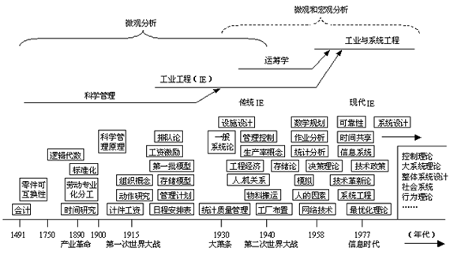

1 . 教学安排
2 . 概述
3 . 工业工程发展简史
 工业工程的起源
工业工程的起源
工业工程发展历程
现代工业工程的发展趋势
4 . 工业工程的定义、目标和功能
5 . 工业工程学科的范畴与性质
6 . 工业工程的特点和意识
7 . 思考与练习题
 返回课程学习首页
返回课程学习首页
工业工程发展历程
工业工程形成和发展演变过程，实际上就是各种用于提高效率、降低成本的知识、原理和方法产生和应用的历史，工业工程技术随着社会和科学技术的发展不断地充实新的内容。 工业工程的发展历程可用图1-2所示的工业工程发展年表概括说明。该图横坐标表示在工业工程发展历程中，一些重大事件(原理和方法)产生的时间。在大多数情况下，只表明事件的开始，而不是结束。

图1-2 工业工程发展年表
从科学管理开始，工业工程发展经历了如图1-2所示的两个时代四个相互交叉的时期。它突出表明不同时期工业工程的重大发展。
(一)科学管理时代(20世纪初至20世纪30年代中期)
这是工业工程萌芽和奠基的时期，是以劳动专业化分工、时间研究、动作研究、标准化等方法的出现为主要内容。1908年，美国宾夕法尼亚州立大学根据泰勒的建议，首次开设工业工程课程，成为第一所设立工业工程的大学。这个时期是在制造业(尤其是机械制造企业)中，采用以动作研究和时间研究为主要内容的科学管理方法，提高工人作业效率。并且，
主要是针对操作者和作业现场较小范围，建立在经验基础上的研究。1917年，美国成立了工业工程师协会(Society of lndustrial Engineers)，这是最早的独立工业工程组织，1936年它与“泰勒协会”合并为“管理促进协会”。
(二)工业工程时代(20世纪20年代后期至现在)
这个年代又分为三个阶段，这三个阶段的发展特点分别是：
1．传统的工业工程(20世纪20年代后期至40年代中期)
它是泰勒的科学管理原理和吉尔布雷斯的方法研究(或叫动作研究)的继承和发展。如休哈特博士1924年建立了“统计质量控制”，为工业工程实际应用提供了科学基础，是一项重要发展。还有进度图、库存模型、人的激励、组织理论、工程经济、工厂布置、物料搬运等方法的生产和应用，使管理有了真正的科学依据。
这一时期，工业工程作为一门专业正式出现并不断充实发展，继1908年美国宾夕法尼亚州立大学首次开设工业工程课程，设立工业工程专业之后，到20世纪30年代美国有更多的大学设立了工业工程系或专业。
由于这一时期重视与工程技术相结合，使工业工程本身具有独立的专业工程性质，使工业工程不同于管理的概念和职能得到确立，使之成为一种在技术与管理之间起着桥梁作用的新型工程技术。
2．工业工程与运筹学结合(20世纪40年代中期至70年代中期)
工业工程进入成熟时期。长期以来，工业工程一直苦于缺少理论基础，直到二次世界大战以后，计算机和运筹学的出现才改变了这一状况。为解决战争中的军事方案选择问题而研究出的运筹学是一个新领域，主要包括数学规划、优化理论、博奕论、排队论、存储论等理论和方法，可以用来描述、分析和设计多种不同类型的运行系统，寻求最优结果。用于产品和市场决策，可实现降低成本、提高效率的目的。同时，计算机为处理数据和对大系统进行数学模拟提供了有力的手段。因此工业工程得到重大发展，运筹学成为工业工程的理论基础。
1948年美国工业工程师学会(American Institute of Industrial Engineers，简称AIIE)正式成立(现在己发展成国际性的学术组织)，并于1955年制定出工业工程的正式定义。20世纪50年代是工业工程发展最快的10年，它奠定了较完善的科学基础。经过20世纪60年代和70年代，其工业工程知识则更加充实，开始进入现代工业工程的新时期，到1975年，美国已有150所大学提供工业工程教育。
3．工业工程与系统工程时期(20世纪70年代至现在和未来)
20世纪从70年代开始，系统工程原理和方法用于工业工程，使它具备更加完善的科学基础与分析方法，得到进一步发展和更广泛的应用。这时期出现的主要技术有：系统分析与设计、信息系统、决策理论、控制理论等。工业工程与系统工程结合后具有以下特征：从系统整体优化的目标出发，研究各生产要素和子系统的协调配合，强调综合应用各种知识和方法的整体性；应用范围从微观系统扩大到宏观大系统的分析设计，从工业和制造部门扩大到服务业及政府部门等各种行业组织。
工业工程正是由于不断吸收现代科技成就，尤其是计算机科学，运筹学、系统工程及相关的学科知识、有了理论基础和科学手段，才得以由经验为主发展到以定量分析为主；以研究生产局部或小系统的改善到研究大系统整体优化和生产率提高，成为一门独立的学科。不但在美国得到广泛的应用和发展，而且很快向世界其他许多工业化国家传播，如西欧(英国、德国、法国等)、日本、原苏联、澳大利亚和其他一些国家和地区，从20世纪50年代前后相继开始采用工业工程。20世纪70年代中，一些发展中国家，如墨西哥、秘鲁、哥伦比亚等，随着工业化发展，也都开始采用工业工程，在大学设置正规工业工程专业。在亚洲，新加坡、韩国和我国的香港、台湾地区，都较早建立工业工程教育并完全采用美国的工业工程体制。印度也于1975年前后开始建立工业工程教育与应用体制。